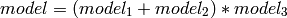

The astropy.modeling and astropy.modeling.fitting modules described here are designed to work as peers. The goal is to be able to add models without explicit reference to fitting algorithms and likewise, add different fitting algorithms without changing the existing models.
Furthermore, the models are designed to be combined in many ways. It is possible, for example, to combine models serially so that the output values of one model are used as input values to another. It is also possible to form a new model by combining models in parallel (each model is evaluated separately with the original input and the deltas are summed). Since models may have multiple input values, machinery is provided that allows assigning outputs from one model into the appropriate input of another in a flexible way, LabeledInput. Finally, it is permitted to combine any number of models using all of these mechanisms simultaneously. A composite model can be used to make further composite models.
In the future this will support a model language which will allow using models in algebraic operations like
